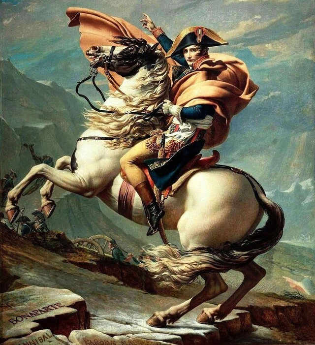

Napoleon Bonaparte
Napoleon Bonaparte (1769-1821) var en fransk militær leder og keiser som spilte en sentral rolle i europeisk politikk på begynnelsen av 1800-tallet. Han er kjent for sine militære reformer, juridiske reformer gjennom Napoleonskoden, og sine store territorielle ambisjoner.
Til tross for sine seire endte hans regime med nederlaget i Waterloo i 1815, og han ble senere sendt i eksil til St. Helena, der han døde. Napoleons innflytelse på europeisk historie er betydelig og debatteres fremdeles i dag.